Installation & Usage
Prerequisites
Loyae currently supports the WordPress CMS. If you are using a different CMS, please contact us at contact@loyae.com
Installing Loyae on WordPress
Search for “Loyae” in the WordPress plugin directory under the “plugins” tab.
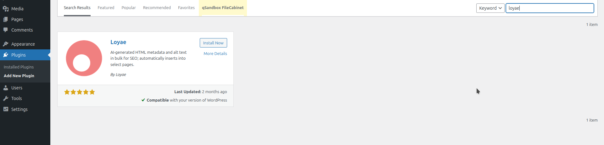{kind=link}
Click “install,” then click “activate.”
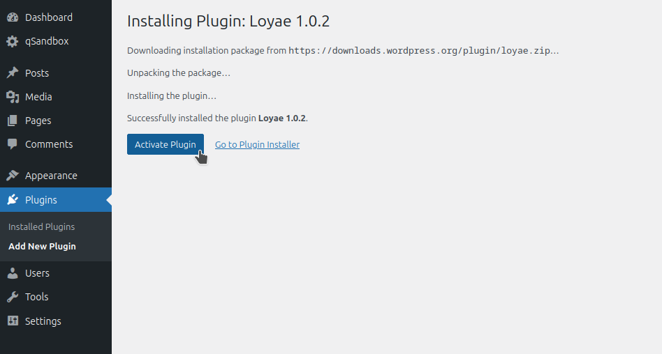{kind=link}
Once it is activated, click on “Loyae” on the bottom center panel.
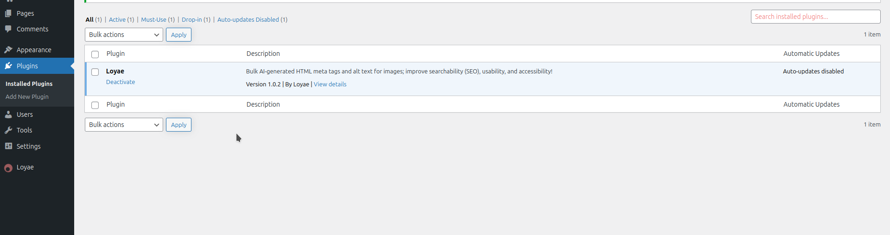{kind=link}
Diagnose
Once you are on the Loyae dashboard, click the diagnose button.
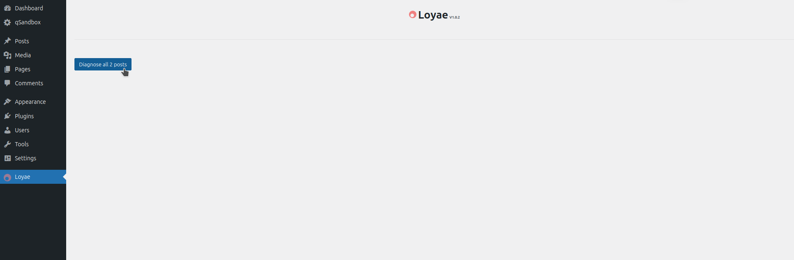{kind=link}
This will take some time to load as all the pages are scanned.
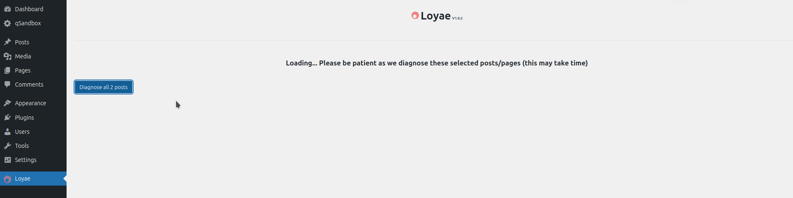{kind=link}
This will generate a table of all your posts and pages.

Select the posts/pages you want to optimize.
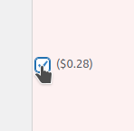{kind=link}
If you would like, you may select all of them.
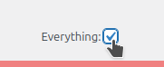{kind=link}
Fund Account
Before you can optimize these posts/pages, you must add the necessary funds to your account. Click “Add funds,” this will open a new page.
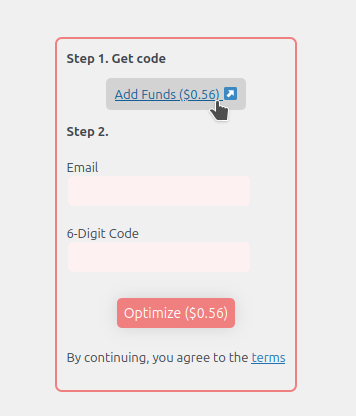{kind=link}
Enter your email, name, and credit card information to fund your account
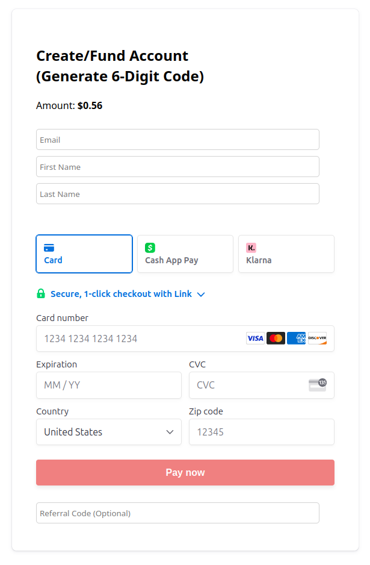{kind=link}
When you click “Pay now,” you will be shown a page that gives you a 6-digit code. Please copy this code. You may now return to the plugin dashboard.
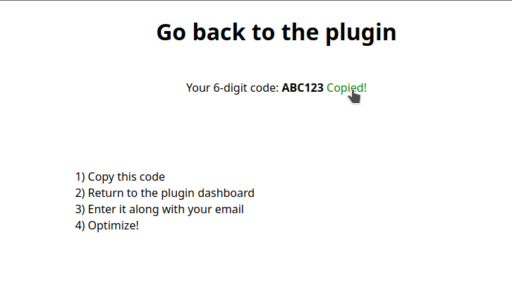{kind=link}
Optimize
Once you are back on the dashboard, enter your email and the 6-digit code. You may now click “Optimize.”
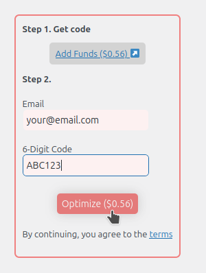{kind=link}
Note that this may take a very long time. DO NOT LEAVE THE PAGE!
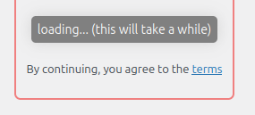{kind=link}
When the optimization is complete, you will see this page. You are done now!
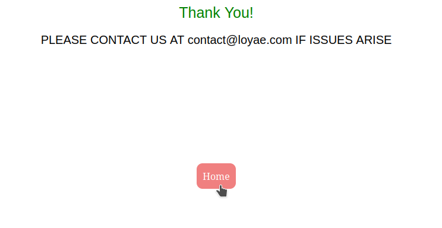{kind=link}
Example of generated alt text:

Example of metadata:
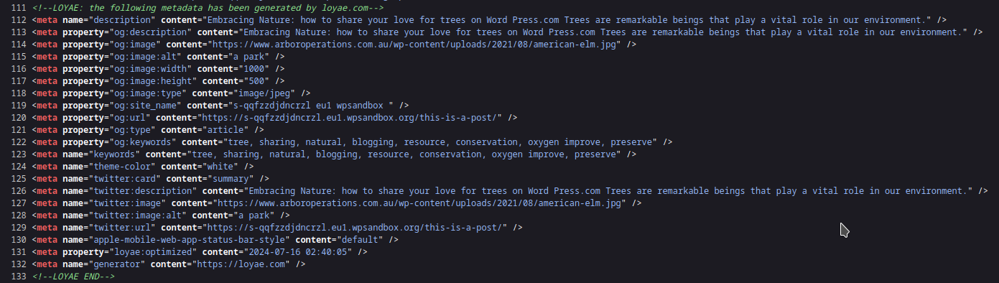{kind=link}